International IT University is a Central Asian leader in training highly skilled, internationally recognized IT experts for the region.International Information Technology University cooperates with local and foreign IT companies and universities. The IITU major educational partner is Сarnegie Mellon University.
-
- ×
Election
The victory of our rector in the elections. Date of publication: 15-11-2017 On October 29, elections of candidates for deputies of maslikhat were held in Almaty. Where our rector Shynybekov Damir Abduhalievich defeated worthily! During the month, the election campaign worked tirelessly. Many meetings of our current maslikhat deputy with residents of the 21st constituency of the Bostandyk district were held, where such issues as problems with lighting the yard, problems with the KSK, dead trees and so on were discussed. All problems were recorded in order to solve them later. Some of them were solved immediately. It saw off dry trees, a new playground. For the whole month there were 10 meetings in schools, 4 meetings with students and 31 meetings with residents. The remaining 11 meetings were held on the initiative of proxies and volunteers. In addition, subbotniks were held, since our deputy is a maslikhat for a clean city! Also, it's not a secret for anyone that our rector Shynybekov Damir Abduhalievich for a healthy lifestyle and runs about 10 km every morning. During the month, morning jogs were organized with a candidate for Maslikhat deputies, this was done in order to attract people to a healthy lifestyle. Well? We congratulate the person on the matter, not on the words, our deputy Maslikhat of Almaty Shynybekov Damir Abdukhalievich!
- ×
November 11 in the "Almaty Arena" was the opening of the National Student League Futsal.
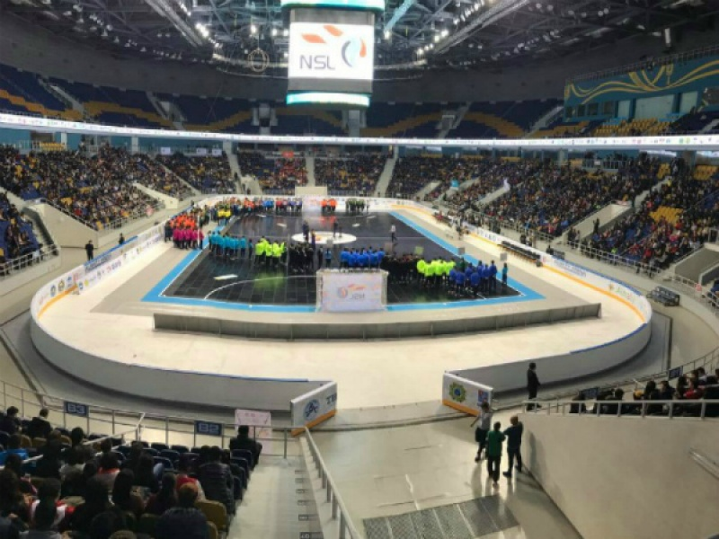Date of publication: 15-11-2017 November 11 in the "Almaty Arena" was the opening of the National Student League Futsal. Under the stormy applause of the fans, a spectacular show was presented. Talented presenter, musicians and dancers, performance of Kazakhstan stars and a lot of valuable prizes - all this conveyed the greatness of the upcoming games. The official opening of the National Student League was glorified by the Champions of Eurasia on Cheerleading "IT Cheer", which are the pride of our university. Also, it was continued by the solemn speech of the Minister of Education and Science Yerlan Sagadiev, the deputy akim of the city of Almaty, Arman Kirykbayev and the president of the national student's league, Damir Shynybekov. "Every year the League is gaining more and more speed and the level of competition is growing. We all know that the head of state has set a clear goal that by 2020 30% of young people should be involved in sports. And we are confident that our league creates all the necessary resources for this task. It is extremely important for us to involve students in an active way of life, as well as to help those who want to build a sports career, "said the president of the national student league Damir Shynybekov. Indeed, in terms of scope and scale, you can see how the level of NSL games has grown. The real spirit of rivalry reigned in the arena, the ardent fans literally shouted each other. On the sports zone there was a real spectacular game of football teams. This is another proof that this tournament brought together the real champions. 24 teams that have passed to the final tournament will fight for the honor, name and pride of their university. Also, I would like to note that the huge support of sponsors has been rendered. After all, as Damir Shynybekov mentioned, the sponsors provided huge, gratuitous support, without which we could not cope. The sponsors and partners of this league are the Ministry of Education and Science of the Republic of Kazakhstan, Almaty City Akimat, Nursultan Nazarbayev Education Foundation, Halyk Fund, Huawei, Futsal Association of Kazakhstan, AFK Kairat. We are very grateful for the promotion and promotion of the NSL. In turn, we want to wish good luck to all players, and IT Legion has a success and a victory. We hope and look forward to our victory. You can see the schedule of matches on the official site of nsl.kz. Come and be ill for ours! Let's show the world what real football is!
-
×
LIFE IN IT
- ×
Gallery
 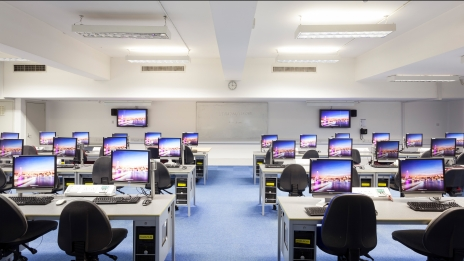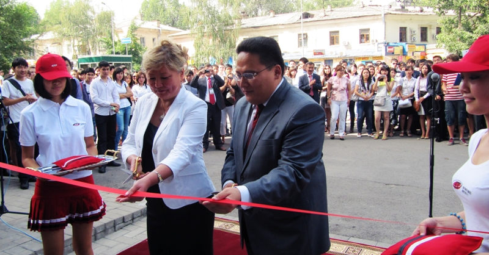
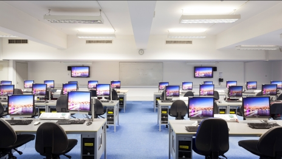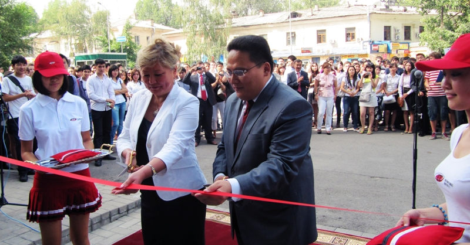 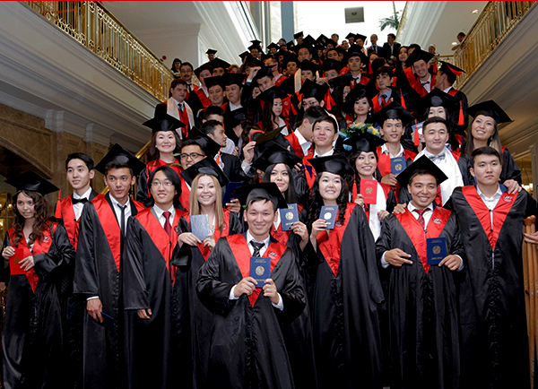
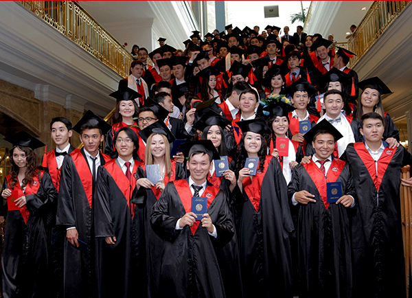
 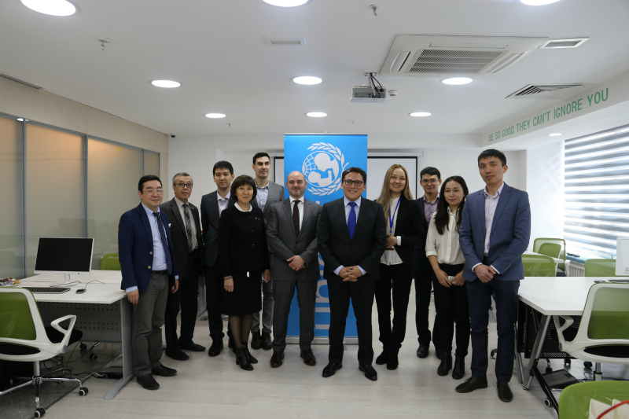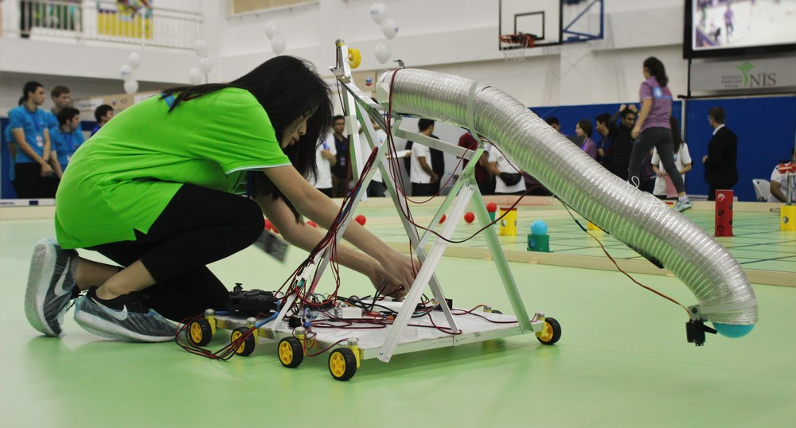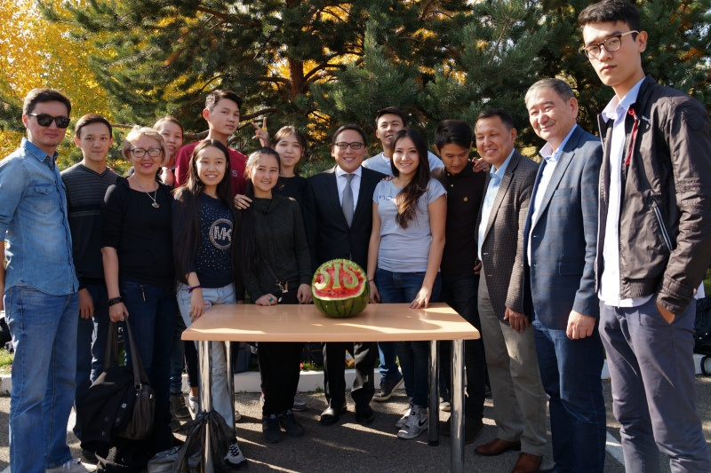
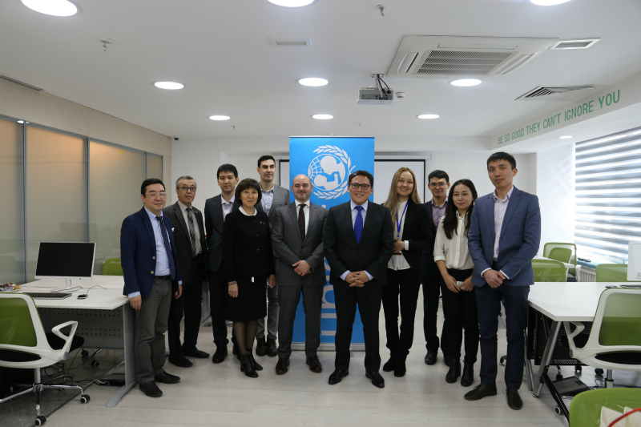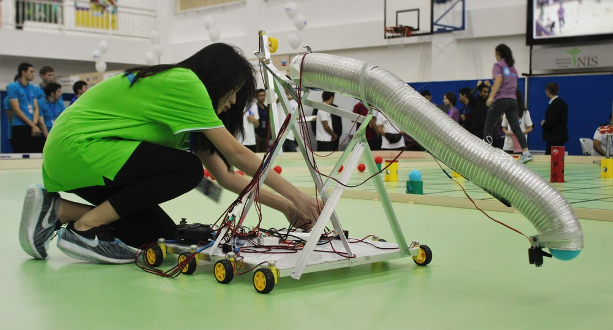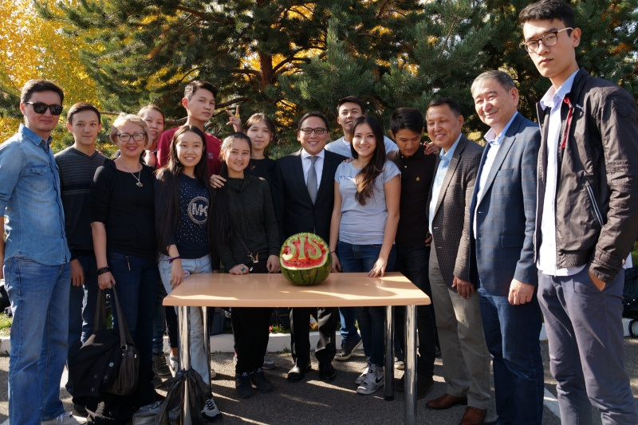 - ×
Day of Financiers
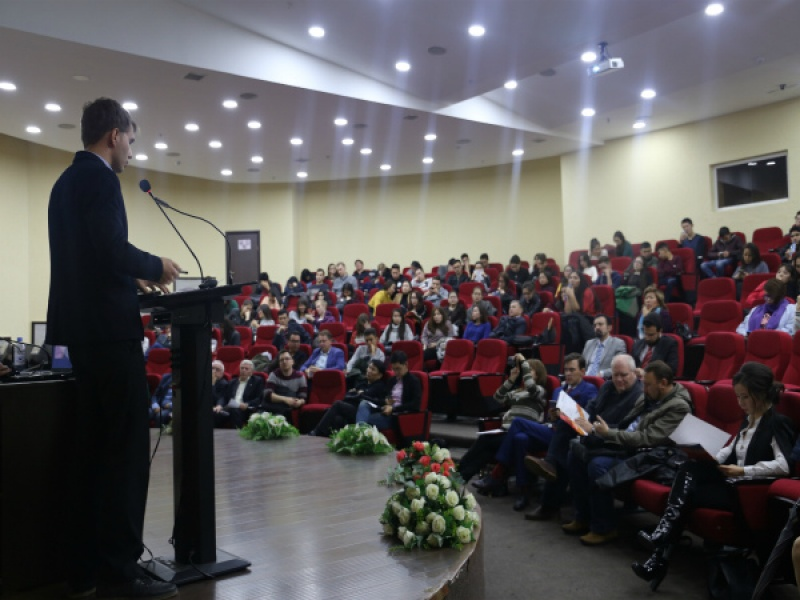On November 10, 2017, a roundtable discussion was held at the MIIT: "Cybersecurity in the financial sphere: new challenges." Date of publication: 15-11-2017 On November 10, 2017, the IUIT hosted a round table on "Cybersecurity in the financial sphere: new challenges", timed to the celebration of the Day of Financiers. During the meeting, topical issues were discussed: 1) Information security management in banks and insurance organizations; 2) Modern challenges and development of cybersecurity (block) technologies in the financial business; 3) Expertise in the field of cybersecurity; 4) Construction of systems for early detection and response to cyberthreats; 5) Protection from external cyber attacks. Operative resolution of incidents; 6) Information risk management in the development of banking products. On this site, expert opinion was made by: - Zubanov Valery, Commercial Director of LLP "Kaspersky Lab KZ"; - Andrey Sabinev, Information Technologies Director of Alfa Bank Kazakhstan JSC; - Pak Konstantin, Director for Development of Finance and Innovations AFK and representatives of the Association of Financiers of Kazakhstan, Kazkommertsbank JSC, Bank CenterCredit JSC, Eurasian Bank JSC, Zhilstroysberbank of Kazakhstan JSC, QazaqBanki JSC, JSC "Altyn Bank", JSC "DB" CZI BANK ", JSC" KSZH "Asia Life", JSC "Insurance Company" Victoria ", JSC" Oil Insurance Company, Insurance Company Kompetenz, Insurance Company Kommesk-Өmіr, Bank RBK, LLP Kaspersky Lab KZ and others.
-
×
Contact Us
-
×
Map
-
×
Contacts
Contacts Reception of the rector:
+7 (727) 330 85 60
Selection committee:
+7 (727) 320-00-00 or
+7 (727) 320-00-01
+7 (727) 244-83-74
+7 (727) 244-83-75
VK: https://vk.com/iitukz
El. mail: info@iitu.kz
Dear students! Now you can ask all questions in the dean's office at 313 kab. on the 3rd floor or by phone. 8-727-330-85-67 (2017, 2027, 2063)
-